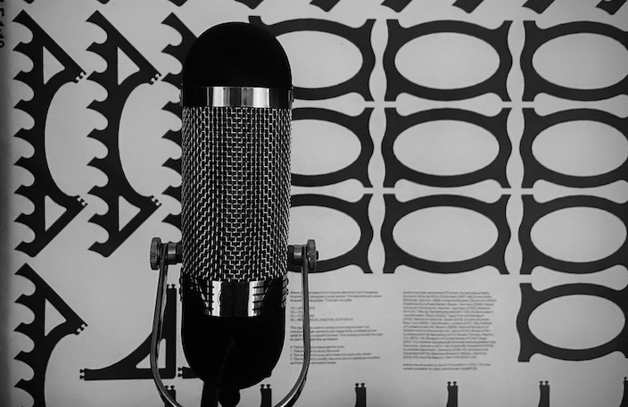

Personalized Voice Lessons with Randy Bergida in Greenpoint, Brooklyn
I always sang, but I truly felt the need to use my voice as an instrument when I started playing guitar when I turned 9. Prior to playing guitar, I played piano and saxophone, but I really connected with the guitar. Still, I felt it was incomplete.
So I started writing songs, which came very naturally, and used my voice as the second instrument. In the beginning, I viewed my voice a bit more as a texture. But as I wrote more and more songs and collaborated with more musicians, I started to treat my voice as a lead instrument. But still, I always quantified the voice as an instrument.
My Approach: The Voice as an Instrument
When I’m teaching voice lessons, the first thing that I tell my students is that the voice is an instrument that has a distinct emotional complexity. But we still need to separate the technique from the literal emotion so that we can feel the emotion through our voice.
This way, we can build confidence in singing and have the vulnerability we desire in the voice without ourselves feeling too vulnerable to sing.
I use body singing as my approach to gaining that skillset, with a heavy emphasis on diaphragm breathing. The goal is to sound like ourselves, with the capacity to sing with range, great intonation, and a healthy voice.
Independence & Collaboration
I’m always eager to incorporate an instrument into our sessions—though it is not mandatory—whether it be keys or guitar. I want my students to thrive and be inspired, gaining the skills so they don't have to rely on others to make music. At the same time, I love encouraging collaboration and building a genuine community of local musicians and friends.
CONTACT
Reach out for questions and rates:
Randy Bergida | 347-645-3721
songwriterfactory@gmail.com